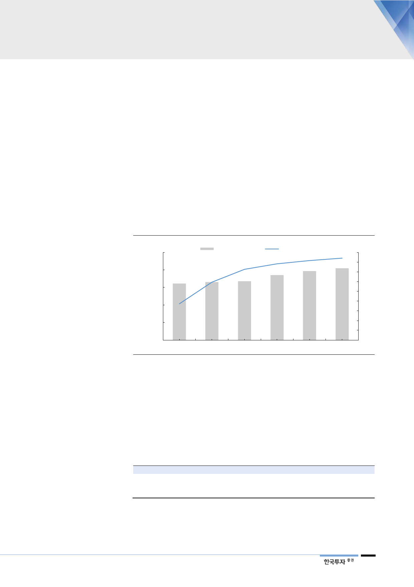

H&A, 사치재가 필수재화
열려있는 성장판
II. H&A, 사치재의 필수재화
1. 회사의 주춧돌 사업부
H&A(가전) 사업부는 회사의 주춧돌이다. 매출액이 꾸준하게 늘고 있고, 영업이
익률도 안정적이다. H&A는 2017년 기준 전사 매출액의 30%, 영업이익의 59%
를 담당하고 있다. H&A는 전통적으로 세탁기, 에어컨, 냉장고 등 전통 가전부터
제습기, 의류건조기, 의류관리기(스타일러) 등 다양한 제품들을 생산 판매하고 있
다. 현재 H&A 사업부는 전통 가전제품들의 판매량이 여전히 양호한 가운데 과
거 사치재로 여겨졌던 건조기, 스타일러, 공기청정기 등의 매출액이 빠르게 증가
하면서 새로운 성장동력으로 부상했다. 이들 제품들의 판매 증가는 일시적인 현
상이 아닌 중장기적으로 이뤄질 것이다.
[그림 7] H&A 사업부 매출액과 영업이익 추이 및 전망
(십억원)
25,000
20,000
15,000
10,000
5,000
0
2014
자료: 한국투자증권
H&A 매출액(좌)
2015
2016
H&A 영업이익률(우)
2017
2018F
(%)
9
8
7
6
5
4
3
2
1
0
2019F
H&A 사업부는 크게 세 가지 세부 사업군(냉장고, 세탁기, 에어컨)으로 분류된다.
에어컨은 경쟁심화로 인해 생산량이 다소 줄고 있고, ASP도 2016년에 전년대비
3.6%, 2017년에는 0.3% 하락했다. 반면 냉장고와 세탁기는 에어컨과 비슷한 경
쟁심화 및 환율변동 등의 하락요인이 있었음에도 불구하고 ASP가 2016년
0.5%, 2017년 2.8% 상승했다. 생산량도 냉장고와 세탁기(건조기, 스타일러 포
함)는 2015년을 저점으로 꾸준하게 늘고 있다.
<표 7> H&A 내 세부사업부 구분
세부 사업부명
에어컨
세탁기
냉장고
자료: 한국투자증권
내용
상업용, 가정용 비중 5:5. 경쟁심화로 생산량 다소 줄고 있음. 17년에 ASP도 소폭 하락
매출액이 꾸준히 늘어남. 의류건조기, 의류관리기 등이 포함된 사업부
안정적인 매출 증가
7